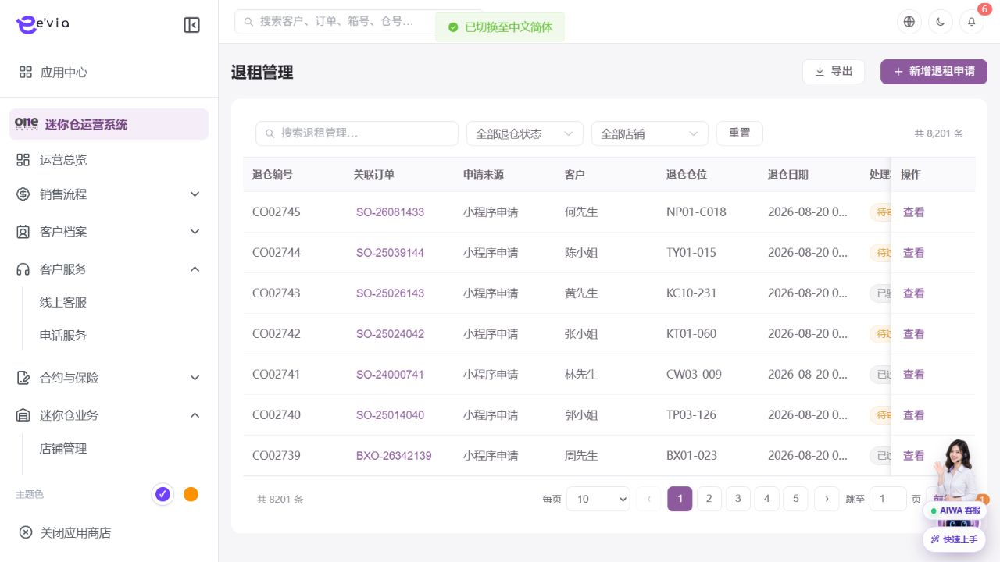

退租管理 PRD
下载 Word 文档退租管理 PRD
运营后台研发详细需求规格 · V2.2 · 2026-09-09
1 文档目标与范围
处理退租申请、查仓、费用结算、按金退款、清仓和退租文件。 本文档明确页面字段、操作流程、业务规则、跨端契约、权限和验收条件。
| 属性 | 内容 |
|---|---|
| 文档编号 | OS-OPS-PRD-15 |
| 产品基线 | AiwaBot产品原型 V3.2 与 OneStorage运营后台原型 V1.1 |
| 版本 | V2.2 2026-09-09 |
1.1 原型界面依据
本模块界面直接取自 AiwaBot产品原型-v3.2.html。真实截图及功能点对应说明见“界面与功能对应说明”。
2 界面与页面结构
2.1 界面与功能对应说明
以下真实原型截图用于确定页面区域、入口和交互位置；字段校验、状态变化和服务端处理以本PRD功能规格为准。

| 说明项 | 界面辅助说明 |
|---|---|
| 对应功能点 | OS-OPS-PRD-15-FP01 新增退租申请；OS-OPS-PRD-15-FP02 安排查仓；OS-OPS-PRD-15-FP03 提交结算；OS-OPS-PRD-15-FP04 审批退款；OS-OPS-PRD-15-FP05 完成退租 |
| 页面区域 | 退租管理列表与处理入口由查询条件、结果列表、状态标识、行级操作和分页区组成。 |
| 交互要求 | 查询条件可组合、重置并在返回时保留；列表与导出共用同一数据范围；按钮依据权限、状态和allowedActions显示。 |
| 状态与权限 | 动作由allowedActions控制；无权限隐藏入口，接口仍执行403校验并记录审计。 |
2.3 筛选条件
| 筛选项 | 规则 |
|---|---|
| 退租编号、订单、客户或仓位 | 支持组合查询、重置和返回保留。 |
| 退租状态 | 支持组合查询、重置和返回保留。 |
| 店铺 | 支持组合查询、重置和返回保留。 |
| 退租日期 | 支持组合查询、重置和返回保留。 |
| 退款状态 | 支持组合查询、重置和返回保留。 |
3 列表字段规格
>| 字段ID | 字段 | 来源 | 展示与交互规则 |
|---|---|---|---|
| OS-OPS-PRD-15-L01 | 退租编号 | 服务端主键或业务编号 | 完整展示并支持复制；唯一且不可使用展示名称代替。 |
| OS-OPS-PRD-15-L02 | 关联订单 | 服务端/关联主数据 | 显示订单编号并支持在有权限时跳转。 |
| OS-OPS-PRD-15-L03 | 正式编号 | 服务端主键或业务编号 | 完整展示并支持复制；唯一且不可使用展示名称代替。 |
| OS-OPS-PRD-15-L04 | 发票编号 | 服务端主键或业务编号 | 完整展示并支持复制；唯一且不可使用展示名称代替。 |
| OS-OPS-PRD-15-L05 | 客户编号 | 服务端主键或业务编号 | 完整展示并支持复制；唯一且不可使用展示名称代替。 |
| OS-OPS-PRD-15-L06 | 退租日期 | 服务端时间 | 按Asia/Hong_Kong显示；空值显示—，排序使用原始时间。 |
| OS-OPS-PRD-15-L07 | 退租状态 | 服务端枚举 | 以标签显示；筛选、导出和详情使用同一枚举文案。 |
| OS-OPS-PRD-15-L08 | 仓位 | 业务主域 | 详情与导出保持一致；空值显示—，不使用模拟值补齐。 |
| OS-OPS-PRD-15-L09 | 仓位到期日 | 服务端时间 | 按Asia/Hong_Kong显示；空值显示—，排序使用原始时间。 |
| OS-OPS-PRD-15-L10 | 按金 | 财务或报价主域 | 显示币种和两位小数；不得用格式化字符串参与计算。 |
| OS-OPS-PRD-15-L11 | 会计付款数目 | 业务主域 | 详情与导出保持一致；空值显示—，不使用模拟值补齐。 |
| OS-OPS-PRD-15-L12 | 退租文件 | 文件服务 | 显示文件名、版本和状态；查看下载需权限并记录审计。 |
| OS-OPS-PRD-15-L13 | 操作 | 服务端/关联主数据 | 根据allowedActions显示查看、编辑及状态动作；后端再次鉴权。 |
4 新增与编辑表单
| 字段ID | 字段 | 控件 | 必填 | 校验与保存规则 |
|---|---|---|---|---|
| OS-OPS-PRD-15-F01 | 关联订单 | 文本框 | 条件必填 | 去除首尾空格；保存原始值与标准化值。 |
| OS-OPS-PRD-15-F02 | 客户 | 文本框 | 条件必填 | 去除首尾空格；保存原始值与标准化值。 |
| OS-OPS-PRD-15-F03 | 仓位 | 文本框 | 条件必填 | 去除首尾空格；保存原始值与标准化值。 |
| OS-OPS-PRD-15-F04 | 申请日期 | 日期或日期时间 | 必填 | 服务端校验起止顺序、营业日和截止规则。 |
| OS-OPS-PRD-15-F05 | 计划退租日期 | 单选或下拉选择 | 必填 | 选项来自服务端字典；提交编码值，界面显示名称。 |
| OS-OPS-PRD-15-F06 | 退租原因 | 多行文本 | 条件必填 | 最多500字；拒绝或异常原因不得只输入空白。 |
| OS-OPS-PRD-15-F07 | 查仓时间 | 日期或日期时间 | 必填 | 服务端校验起止顺序、营业日和截止规则。 |
| OS-OPS-PRD-15-F08 | 查仓负责人 | 单选或下拉选择 | 必填 | 选项来自服务端字典；提交编码值，界面显示名称。 |
| OS-OPS-PRD-15-F09 | 清仓情况 | 文本框 | 条件必填 | 去除首尾空格；保存原始值与标准化值。 |
| OS-OPS-PRD-15-F10 | 损坏费用 | 金额输入 | 条件必填 | 输入大于等于0，最多两位小数；服务端以最小货币单位重算。 |
| OS-OPS-PRD-15-F11 | 欠费 | 文本框 | 条件必填 | 去除首尾空格；保存原始值与标准化值。 |
| OS-OPS-PRD-15-F12 | 其他扣款 | 文本框 | 条件必填 | 去除首尾空格；保存原始值与标准化值。 |
| OS-OPS-PRD-15-F13 | 应退按金 | 金额输入 | 条件必填 | 输入大于等于0，最多两位小数；服务端以最小货币单位重算。 |
| OS-OPS-PRD-15-F14 | 退款方式 | 单选或下拉选择 | 必填 | 选项来自服务端字典；提交编码值，界面显示名称。 |
| OS-OPS-PRD-15-F15 | 收款账户 | 文本框 | 条件必填 | 去除首尾空格；保存原始值与标准化值。 |
| OS-OPS-PRD-15-F16 | 退租文件 | 文件上传 | 条件必填 | 使用短期签名上传，校验类型、大小、哈希和病毒扫描结果。 |
| OS-OPS-PRD-15-F17 | 备注 | 多行文本 | 条件必填 | 最多500字；拒绝或异常原因不得只输入空白。 |
5 功能点详细设计
| 功能编号 | 功能点 | 目标 |
|---|---|---|
| OS-OPS-PRD-15-FP01 | 新增退租申请 | 校验租约、通知期和未结费用。 |
| OS-OPS-PRD-15-FP02 | 安排查仓 | 创建工单并记录时间、负责人和检查清单。 |
| OS-OPS-PRD-15-FP03 | 提交结算 | 计算按金、欠费、损坏和其他扣款，生成结算版本。 |
| OS-OPS-PRD-15-FP04 | 审批退款 | 客户确认结算后进入财务审批。 |
| OS-OPS-PRD-15-FP05 | 完成退租 | 退款结果明确且清仓完成后释放仓位并归档文件。 |
5.1 新增退租申请
功能编号：OS-OPS-PRD-15-FP01
功能目的：校验租约、通知期和未结费用。
使用角色与入口：具备本模块创建权限的运营人员；从模块列表右上角新增入口或关联对象快捷入口进入。入口显示前校验菜单、动作和数据范围。
前置条件：用户登录有效并具备创建或批量权限；关联主数据有效且属于dataScope；页面已加载最新字典、业务配置和allowedActions。
界面操作：打开新增界面，按页面分组录入关联订单、客户、仓位、申请日期、计划退租日期、退租原因、查仓时间、查仓负责人、清仓情况、损坏费用、欠费、其他扣款；关联对象使用检索选择。点击保存前完成字段级和跨字段校验。
系统处理：服务端使用clientRequestId幂等校验，在事务内生成业务编号、主对象、初始状态和审计记录；事务提交后发布领域事件。校验租约、通知期和未结费用。
业务规则：退租日期不得早于允许的最早退租日。服务端必须重复校验。
成功结果：页面提示“新增退租申请成功”，刷新对象状态、version、allowedActions、关联对象和时间线；如产生异步任务，同时显示任务编号和进度入口。
异常与恢复：400保留输入；403拒绝并审计；409要求刷新；超时按clientRequestId查询；部分成功显示明细和补偿入口。
跨端影响：客户小程序提交本人退租申请和收款资料；接收端打开后重新鉴权并回源。
验收条件：在允许状态下完成新增退租申请时仅产生一次预期数据变化和一次审计记录；越权、错误状态、重复提交及版本冲突均不得产生重复对象或越级状态。
5.2 安排查仓
功能编号：OS-OPS-PRD-15-FP02
功能目的：创建工单并记录时间、负责人和检查清单。
使用角色与入口：当前对象负责人、被分派执行人或获授权管理员；从列表行操作、详情页主操作区或待办入口进入。入口显示前校验菜单、动作和数据范围。
前置条件：用户登录有效；目标对象存在且属于用户dataScope；当前状态包含该动作；页面持有最新version和allowedActions。涉及金额、库存、附件或第三方结果时必须回源确认。
界面操作：在详情页执行安排查仓，填写或核对关联订单、客户、申请日期、计划退租日期、退租原因、查仓时间、查仓负责人、备注、退租编号、正式编号；界面随步骤显示当前节点、下一步和可撤回条件。
系统处理：服务端调用POST /ops/v1/checkouts/{id}/actions/{action}，校验权限、当前状态、expectedVersion和业务不变量，在事务中写入状态及时间线。创建工单并记录时间、负责人和检查清单。
业务规则：退租日期不得早于允许的最早退租日；结算金额=按金-欠费-损坏费-其他扣款。服务端必须重复校验。
成功结果：页面提示“安排查仓成功”，刷新对象状态、version、allowedActions、关联对象和时间线；如产生异步任务，同时显示任务编号和进度入口。
异常与恢复：400保留输入；403拒绝并审计；409要求刷新；超时按clientRequestId查询；部分成功显示明细和补偿入口。
跨端影响：工单小程序执行查仓并上传照片；接收端打开后重新鉴权并回源。
验收条件：在允许状态下完成安排查仓时仅产生一次预期数据变化和一次审计记录；越权、错误状态、重复提交及版本冲突均不得产生重复对象或越级状态。
5.3 提交结算
功能编号：OS-OPS-PRD-15-FP03
功能目的：计算按金、欠费、损坏和其他扣款，生成结算版本。
使用角色与入口：具备审批、财务或复核权限的人员；从待办中心、列表行操作或详情页审批区进入。入口显示前校验菜单、动作和数据范围。
前置条件：用户登录有效；目标对象存在且属于用户dataScope；当前状态包含该动作；页面持有最新version和allowedActions。涉及金额、库存、附件或第三方结果时必须回源确认。
界面操作：详情页展示申请信息、金额/附件、历史意见及关联订单、客户、申请日期、计划退租日期、退租原因、查仓时间、查仓负责人、备注、退租编号、正式编号；选择通过或拒绝，拒绝原因必填，提交前二次确认。
系统处理：服务端调用POST /ops/v1/checkouts/{id}/actions/{action}，校验权限、当前状态、expectedVersion和业务不变量，在事务中写入状态及时间线。计算按金、欠费、损坏和其他扣款，生成结算版本。
业务规则：结算金额=按金-欠费-损坏费-其他扣款。服务端必须重复校验。
成功结果：页面提示“提交结算成功”，刷新对象状态、version、allowedActions、关联对象和时间线；如产生异步任务，同时显示任务编号和进度入口。
异常与恢复：400保留输入；403拒绝并审计；409要求刷新；超时按clientRequestId查询；部分成功显示明细和补偿入口。
跨端影响：后台结算需客户确认，退款和完成状态同步小程序；接收端打开后重新鉴权并回源。
验收条件：在允许状态下完成提交结算时仅产生一次预期数据变化和一次审计记录；越权、错误状态、重复提交及版本冲突均不得产生重复对象或越级状态。
5.4 审批退款
功能编号：OS-OPS-PRD-15-FP04
功能目的：客户确认结算后进入财务审批。
使用角色与入口：具备审批、财务或复核权限的人员；从待办中心、列表行操作或详情页审批区进入。入口显示前校验菜单、动作和数据范围。
前置条件：用户登录有效；目标对象存在且属于用户dataScope；当前状态包含该动作；页面持有最新version和allowedActions。涉及金额、库存、附件或第三方结果时必须回源确认。
界面操作：详情页展示申请信息、金额/附件、历史意见及关联订单、客户、申请日期、计划退租日期、退租原因、查仓时间、查仓负责人、备注、退租编号、正式编号；选择通过或拒绝，拒绝原因必填，提交前二次确认。
系统处理：服务端调用POST /ops/v1/checkouts/{id}/actions/{action}，校验权限、当前状态、expectedVersion和业务不变量，在事务中写入状态及时间线。客户确认结算后进入财务审批。
业务规则：退款使用独立付款记录且不可直接改原收款。服务端必须重复校验。
成功结果：页面提示“审批退款成功”，刷新对象状态、version、allowedActions、关联对象和时间线；如产生异步任务，同时显示任务编号和进度入口。
异常与恢复：400保留输入；403拒绝并审计；409要求刷新；超时按clientRequestId查询；部分成功显示明细和补偿入口。
跨端影响：客户小程序提交本人退租申请和收款资料；接收端打开后重新鉴权并回源。
验收条件：在允许状态下完成审批退款时仅产生一次预期数据变化和一次审计记录；越权、错误状态、重复提交及版本冲突均不得产生重复对象或越级状态。
5.5 完成退租
功能编号：OS-OPS-PRD-15-FP05
功能目的：退款结果明确且清仓完成后释放仓位并归档文件。
使用角色与入口：当前对象负责人、被分派执行人或获授权管理员；从列表行操作、详情页主操作区或待办入口进入。入口显示前校验菜单、动作和数据范围。
前置条件：用户登录有效；目标对象存在且属于用户dataScope；当前状态包含该动作；页面持有最新version和allowedActions。涉及金额、库存、附件或第三方结果时必须回源确认。
界面操作：在详情页执行完成退租，填写或核对关联订单、客户、申请日期、计划退租日期、退租原因、查仓时间、查仓负责人、备注、退租编号、正式编号；界面随步骤显示当前节点、下一步和可撤回条件。
系统处理：服务端调用POST /ops/v1/checkouts/{id}/actions/{action}，校验权限、当前状态、expectedVersion和业务不变量，在事务中写入状态及时间线。退款结果明确且清仓完成后释放仓位并归档文件。
业务规则：退租日期不得早于允许的最早退租日。服务端必须重复校验。
成功结果：页面提示“完成退租成功”，刷新对象状态、version、allowedActions、关联对象和时间线；如产生异步任务，同时显示任务编号和进度入口。
异常与恢复：400保留输入；403拒绝并审计；409要求刷新；超时按clientRequestId查询；部分成功显示明细和补偿入口。
跨端影响：工单小程序执行查仓并上传照片；接收端打开后重新鉴权并回源。
验收条件：在允许状态下完成完成退租时仅产生一次预期数据变化和一次审计记录；越权、错误状态、重复提交及版本冲突均不得产生重复对象或越级状态。
6 状态机与业务规则
| 对象 | 状态流转 |
|---|---|
| 退租管理 | 已申请→待确认→待查仓→待结算→待退款→已退租；可进入驳回/取消/异常 |
| 异步任务 | 待执行→执行中→成功/失败→重试/人工处理 |
| 规则ID | 业务规则 |
|---|---|
| OS-OPS-PRD-15-R01 | 退租日期不得早于允许的最早退租日 |
| OS-OPS-PRD-15-R02 | 结算金额=按金-欠费-损坏费-其他扣款 |
| OS-OPS-PRD-15-R03 | 扣款必须有依据和附件 |
| OS-OPS-PRD-15-R04 | 退款使用独立付款记录且不可直接改原收款 |
| OS-OPS-PRD-15-R05 | 仓位只在清仓确认后释放 |
| OS-OPS-PRD-15-R06 | 所有写请求携带clientRequestId和expectedVersion，重复请求返回首次结果 |
| OS-OPS-PRD-15-R07 | 服务端返回allowedActions，前端仅据此展示按钮，后端仍逐动作鉴权 |
| OS-OPS-PRD-15-R08 | 列表、详情、关联选择器、统计和导出使用同一数据范围 |
| OS-OPS-PRD-15-R09 | 创建、编辑、状态流转、导出、下载和审批均记录操作审计 |
| OS-OPS-PRD-15-R10 | 第三方调用失败不得伪装主业务成功，进入可重试或人工处理状态 |
7 BPMN流程

客户、后台、执行端和领域服务节点必须与状态机一致。
8 跨端交互规则
| 规则ID | 交互规则 |
|---|---|
| OS-OPS-PRD-15-X01 | 客户小程序提交本人退租申请和收款资料 |
| OS-OPS-PRD-15-X02 | 工单小程序执行查仓并上传照片 |
| OS-OPS-PRD-15-X03 | 后台结算需客户确认，退款和完成状态同步小程序 |
客户小程序仅访问本人数据，工单小程序仅访问本人或团队任务
深链打开后重新校验身份、权限和最新状态
金额、库存、状态和allowedActions必须回源
离线重试沿用同一clientRequestId
9 接口与事件契约
| 契约 | 路径或事件 | 要求 |
|---|---|---|
| 列表 | GET /ops/v1/checkouts | 分页、排序、筛选、数据范围和脱敏 |
| 详情 | GET /ops/v1/checkouts/{id} | version、关联对象、时间线和allowedActions |
| 新增 | POST /ops/v1/checkouts | clientRequestId幂等 |
| 编辑 | PATCH /ops/v1/checkouts/{id} | expectedVersion并发控制 |
| 动作 | POST /ops/v1/checkouts/{id}/actions/{action} | 动作级权限和状态前置 |
| 事件 | 退租管理.Changed.v1 | eventId、aggregateId、version和occurredAt |
10 异常与边界处理
| 场景 | 处理 |
|---|---|
| 400字段错误 | 字段级提示并保留输入 |
| 403无权限 | 拒绝并记录审计 |
| 404不存在 | 不泄露额外对象信息 |
| 409版本冲突 | 刷新后重新操作 |
| 重复请求 | 返回首次幂等结果 |
| 第三方失败 | 进入重试或人工处理 |
11 验收标准
| 验收ID | 验收条件 |
|---|---|
| OS-OPS-PRD-15-AC01 | 列表字段、筛选、分页、排序和导出一致 |
| OS-OPS-PRD-15-AC02 | 表单字段、必填和跨字段校验完整 |
| OS-OPS-PRD-15-AC03 | 所有动作同时校验权限、数据范围和状态 |
| OS-OPS-PRD-15-AC04 | 重复请求无重复记录或副作用 |
| OS-OPS-PRD-15-AC05 | 跨端编号、状态、金额和时间一致 |
| OS-OPS-PRD-15-AC06 | 异常和空数据有明确反馈 |
| OS-OPS-PRD-15-AC07 | 敏感字段按权限脱敏并审计 |
| OS-OPS-PRD-15-AC08 | P0规则具有自动化测试 |